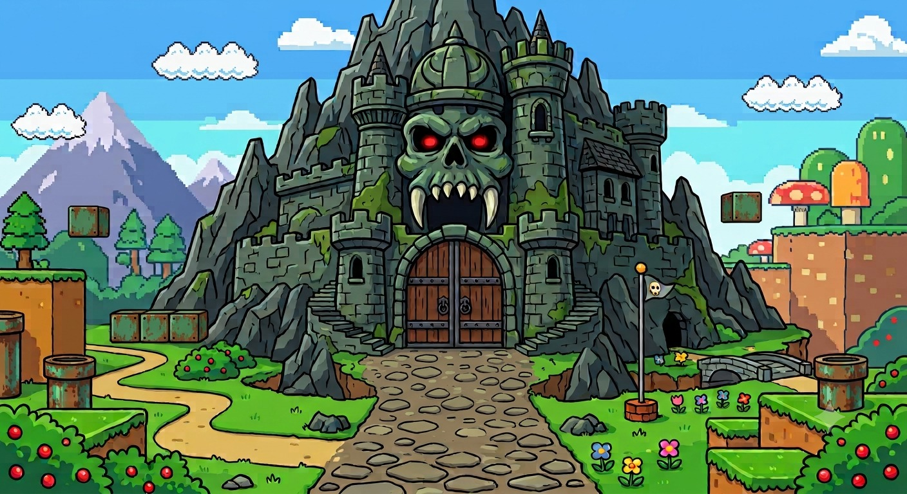

Os 70 avatares são personagens originais em estilo cartoon, distribuídos aleatoriamente entre os alunos a cada montagem da turma.
O sorteio usa peso probabilístico: a chance de cada aluno cai pela metade a cada vez que ele é chamado, de modo que a turma inteira tende a ser percorrida sem que ninguém fique impossibilitado de ser sorteado novamente.
🔑 Precisa da senha? Digite-a no portão do castelo, logo abaixo. As senhas são informadas em aula. Professores e estudantes que queiram utilizar estas atividades podem solicitá-la pelo e-mail prof.aldair.franca@gmail.com.
LÓPEZ-OTÍN, Carlos et al. Hallmarks of aging: An expanding universe. Cell, v. 186, n. 2, p. 243-278, 19 jan. 2023. DOI: https://doi.org/10.1016/j.cell.2022.11.001.
KUMAR, Vinay; ABBAS, Abul K.; ASTER, Jon C. Robbins & Cotran Patologia: Bases Patológicas das Doenças. 10. ed. Rio de Janeiro: GEN Guanabara Koogan, 2023. E-book. ISBN 9788595159174.
FILHO, Geraldo B. Bogliolo - Patologia. 10. ed. Rio de Janeiro: Guanabara Koogan, 2021. E-book. ISBN 9788527738378.
Ganeo AL, Cândido L, Santos JA, Santos LAFR, Schimit LM, Carrenho MCP, et al. Células: uma breve revisão sobre a diversidade, características, organização, estruturas e funções celulares. UNISANTA Bioscience. 2019;8(4):457-465.
Schieweck R, Götz M. Pan-cellular organelles and suborganelles—from common functions to cellular diversity? Genes Dev. 2024;38(3-4):98-114. doi: 10.1101/gad.351337.123.
Alberts B, et al. Fundamentos da Biologia Celular. 4th ed. Porto Alegre: Artmed; 2017.
KUMAR, Vinay; ABBAS, Abul K.; ASTER, Jon C. Robbins & Cotran Patologia: Bases Patológicas das Doenças. 10. ed. Rio de Janeiro: GEN Guanabara Koogan, 2023. E-book. ISBN 9788595159174.
FILHO, Geraldo B. Bogliolo - Patologia. 10. ed. Rio de Janeiro: Guanabara Koogan, 2021. E-book. ISBN 9788527738378.
Amabis JM, Martho GR. Organizando os cromossomos humanos: idiograma. Temas de Biologia: propostas para desenvolver em sala de aula [Internet]. São Paulo: Moderna; 1997. n. 4. Disponível em: https://bgnaescola.files.wordpress.com/2009/12/cariotipo.pdf
Nelson DL, Cox MM. Princípios de Bioquímica de Lehninger. 7. ed. Porto Alegre: Artmed; 2019. Capítulo 3: Aminoácidos, peptídeos e proteínas.
Os valores de pKa e de pI seguem a tabela de propriedades dos aminoácidos comuns encontrados em proteínas.

Senha incorreta. Confira com o professor e tente novamente.